Section 8.2 Inverse Trigonometric Functions
We have been using the calculator keys \(SIN^{-1},~COS^{-1}\text{,}\) and \(TAN^{-1}\) to find approximate values of \(\theta\) when we know either \(\sin \theta,~ \cos \theta\text{,}\) or \(\tan \theta\text{.}\) For example, if we know that \(\cos \theta = 0.3\text{,}\) then
In other words, we use the \(SIN^{-1},~COS^{-1}\text{,}\) and \(TAN^{-1}\) keys to solve trigonometric equations, just as we use square roots to solve quadratic equations. Using one of these keys performs the inverse operation for computing a sine, cosine or tangent, just as extracting square roots is the inverse of squaring a number.
Many functions can be described as an operation or as a sequence of operations on the input value, and this leads us to the notion of an inverse function.
Subsection Inverse of a Function
Raising a number to the \(n^{th}\) power and taking \(n^{th}\) roots are an example of inverse operations. For example, if we first cube a number and then take the cube root of the result, we return to the original number.

We say that the two functions \(f(x)=x^3\) and \(g(x)=\sqrt[3]{x}\) are inverse functions. Each of the functions undoes the results of the other function. You can confirm this behavior by consulting the tables of values for the two functions.
| \(x\) | \(f(x)=x^3\) |
| \(-2\) | \(-8\) |
| \(-1\) | \(-1\) |
| \(-\dfrac{1}{2}\) | \(-\dfrac{1}{8}\) |
| \(0\) | \(0\) |
| \(\dfrac{1}{2}\) | \(\dfrac{1}{8}\) |
| \(1\) | \(1\) |
| \(2\) | \(8\) |
| \(x\) | \(g(x)=\sqrt[3]{x}\) |
| \(-8\) | \(-2\) |
| \(-1\) | \(-1\) |
| \(-\dfrac{1}{8}\) | \(-\dfrac{1}{2}\) |
| \(0\) | \(0\) |
| \(\dfrac{1}{8}\) | \(\dfrac{1}{2}\) |
| \(1\) | \(1\) |
| \(8\) | \(2\) |
Observe that the table of values for \(g(x)=\sqrt[3]{x}\) can be obtained from the table for \(f(x)=x^3\) by interchanging the values of \(x\) and \(y\) in each ordered pair. In fact, we can often find a formula for the inverse function by interchanging the input and output variables in the formula for the function, and then solving for the new output variable.
For our example, we start with the formula for the cubing function:
We use the notation \(\blert{f^{-1}(x)}\) to denote the inverse function. Thus, we have just shown that the inverse function for \(f(x)=x^3\) is \(f^{-1}(x)=\sqrt[3]{x}\text{.}\)
Caution 8.21.
The notation \(f^{-1}(x)\) does \(\alert{\text{not}}\) mean \(\dfrac{1}{f(x)}\) !
For example, if \(f(x)=x^3\text{,}\) we have \(f^{-1}(x)=\sqrt[3]{x}\text{,}\) but \(\dfrac{1}{f(x)} = \dfrac{1}{x^3}\text{,}\) and we know that \(\sqrt[3]{x} \not= \dfrac{1}{x^3}\text{.}\)
Although it is true that a negative exponent denotes a reciprocal, so that, for instance, \(a^{-2} = \dfrac{1}{a^2}\text{,}\) the \(-1\) in \(f^{-1}(x)\) is not an exponent; this is an entirely new use for the same symbol.
Example 8.22.
Let \(f(x)=\dfrac{1}{x-3}\text{.}\) Find a formula for the inverse function.
We interchange the variables in the formula for \(f\) (that is, in \(y=\dfrac{1}{x-3}\)) to get
Now we solve for \(y\) in terms of \(x\) by taking the reciprocal of both sides.
so \(y = \dfrac{1}{x} + 3\text{.}\) The formula for the inverse function is \(f^{-1}(x)=\dfrac{1}{x} + 3\text{.}\)
Checkpoint 8.23.
Let \(g(x)=2x-6\text{.}\) Find a formula for the inverse function.
\(g^{-1}(x)=\dfrac{1}{2}x+3 \)
In the examples above, note that \(f^{-1}(x) \not= \dfrac{1}{f(x)}\text{,}\) and \(g^{-1}(x) \not= \dfrac{1}{g(x)}\text{.}\)
Subsection The Graph of the Inverse
If we graph the function \(f(x)=x^3\) and its inverse \(f^{-1}(x)=\sqrt[3]{x}\) on the same set of axes, we see that the graphs are related in an interesting way, as shown below. The graphs are symmetric about the line \(y=x\text{,}\) which means that if we were to place a mirror along the line each graph would be the reflection of the other.

This symmetry occurs because we interchanged the roles of \(x\) and \(y\) when we defined the inverse function.
Note that, for this example, both graphs pass the vertical line test, so they are both graphs of functions.
Example 8.24.
- Graph the function \(f(x)=\dfrac{1}{x-3}\) and its inverse \(f^{-1}(x)=\dfrac{1}{x} + 3\) on the same grid, and sketch in the line \(y=x\) to illustrate the symmetry.
- Find the domain and range of \(f\text{,}\) and the domain and range of \(f^{-1}\text{.}\)
-
The graph is shown below. Note that \(f\) has a vertical asymptote at \(x=3\text{,}\) and \(f^{-1}\) has a horizontal asymptote at \(y=3\text{.}\)
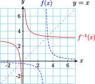 -
Note that \(f\) is undefined at \(x=3\text{,}\) and \(f^{-1}\) is undefined at \(x=0\text{.}\) Thus, the domain of \(f\) is all real numbers except 3, and the domain of \(f^{-1}\) is all real numbers except 0.
We can find the range of each function by examining its graph:
- \(f\) has a horizontal asymptote at \(y=0\text{,}\) so there is no point on the graph with \(y=0\text{,}\) and its range is all real numbers except 0.
- Similarly, there is no point on the graph of \(f^{-1}\) with \(y=3\text{,}\) so its range is all real numbers except 3.
Checkpoint 8.25.
-
Graph \(g(x)=2x-6\) and its inverse function on the grid below, and sketch in the line \(y=x\) to show the symmetry.
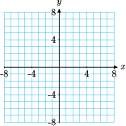 - Find the domain and range of \(g\text{,}\) and the domain and range of \(g^{-1}\text{.}\)
- 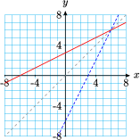
The domain and range of \(g\) and \(g^{-1} \) each include all real numbers
From the examples above, we see that the domain of \(f^{-1}\) is the same as the range of \(f\text{,}\) and the range of \(f^{-1}\) is the same as the domain of \(f\text{.}\) This should seem reasonable, because we obtain the inverse function by interchanging the values of theinput and output variables.
Domain \((f) = \) Range \((f^{-1})\) and Domain \((f^{-1}) = \) Range \((f)\)
Subsection Does Every Function Have an Inverse?
In the examples above, the inverse of the function turned out to be a function as well. But this is not always the case. Consider the function \(F(x)=x^2 - 4\text{.}\) First we'll find a formula for the inverse. We interchange \(x\) and \(y\) to get
and solve for \(y\text{:}\)
The graphs of \(F\) and its inverse are shown below. You can see that although \(F\) is a function, its inverse is not.
Is there some way to predict whether the inverse of a function will be a function, too? Yes! In order for the inverse to be a function, its graph must pass the vertical line test. (Recall that if a graph passes the vertical line test, there is only one \(y\)-value for each value of \(x\text{.}\))
Now, we obtain the inverse by interchanging \(x\) and \(y\) in the formula for a function, so the inverse will be a function only if the original function passes the horizontal line test. A function that passes the horizontal line test is called one-to-one.
Horizontal Line Test.
A function passes the Horizontal Line Test if every horizontal line intersects the graph at most once. In that case, there is only one \(x\)-value for each \(y\)-value, and the function is called one-to-one.
Caution 8.26.
It is always the case that we can find the inverse of a function: we just interchange the domain and range values. However, the important question is whether the inverse is also a function. If the inverse is a function, we say that “\(f\) has an inverse function.” All of this leads us to the following result.
Inverse Function.
A function \(f\) has an inverse function if and only if \(f\) is one-to-one.
Example 8.27.
- Which of the graphs below represent functions?
- Which of the functions are one-to-one?
- Which of these functions have inverse functions?

- All three graphs pass the vertical line test, so all three represent functions.
- Only the function represented by graph II passes the horizontal line test, so it is the only one-to-one function.
- Only function II is one-to-one, so it is the only function that has an inverse function.
Checkpoint 8.28.
Which of the functions below are one-to-one?
I and III
Subsection Restricting the Domain: The Inverse Sine Function
Sometimes it is so important that the inverse be a function that we are willing to sacrifice part of the original function to achieve this result. Look again at the graph of \(F(x)=x^2 - 4\text{.}\) If we use only nonnegative \(x\)-values for the domain, we create a new function,
shown below.
This new function is one-to-one, and its inverse, \(f^{-1}(x) = \sqrt{x+4}\text{,}\) is also a function. (We could also have used only negative \(x\)-values for the domain, or some smaller interval, just as long as the resulting function is one-to-one.)
We say that we have restricted the domain of the original function, and we will use this technique to define inverse functions for the trigonometric functions.
The sine function is not one-to-one; there are many angles that have the same sine value. In order to define its inverse function, we must restrict the domain of the sine to an interval on which the \(y\)-values do not repeat. But there are many candidates for such an interval; which one shall we choose?
It turns out that the most useful interval is found by starting at \(x=0\) and moving as far as we can in either direction until the \(y\)-values begin to repeat. By doing so, we obtain the restricted domain \(\dfrac{-\pi}{2} \le x \le \dfrac{\pi}{2}\text{,}\) as shown below. This piece of the function includes all of the original range values, from \(-1\) to \(1\text{.}\)
Because the sine function is one-to-one on this domain, its inverse is a function.
The graph of the inverse sine function, \(y=\sin^{-1}x\text{,}\) is shown below. Its domain is the same as the range of the sine function, and its range is our restricted domain for sine, \(\dfrac{-\pi}{2} \le y \le \dfrac{\pi}{2}\text{.}\)
Definition of the inverse sine function.
In other words, \(\sin^{-1}x\) is the angle in radians, between \(\dfrac{-\pi}{2}\) and \(\dfrac{\pi}{2}\), whose sine is \(x\text{.}\) There are many angles with a given sine value \(x\text{,}\) but only one of these angles can be \(\sin^{-1}x\text{.}\) This is why the calculator's \(SIN^{-1}\) key only gives outputs between \(\dfrac{-\pi}{2}\) and \(\dfrac{\pi}{2}\text{.}\)
- If \(x=\sin \theta\) is positive, the inverse sine function delivers a first quadrant angle, \(0 \le \theta \le \dfrac{\pi}{2}\text{.}\)
- If \(x=\sin \theta\) is negative, the inverse sine function delivers a fourth quadrant angle, \(\dfrac{-\pi}{2} \le \theta \le 0\text{.}\)
Example 8.29.
Simplify each expression without using a calculator.
- \(\displaystyle \sin^{-1}(\dfrac{-\sqrt{3}}{2})\)
- \(\displaystyle \sin^{-1}(\sin \pi)\)
- We know that \(\sin^{-1}(\dfrac{-\sqrt{3}}{2})\) is an angle whose sine is \(\dfrac{-\sqrt{3}}{2}\text{,}\) and that \(\dfrac{-\pi}{2} \le \theta \le \dfrac{\pi}{2}\text{.}\) Because \(\sin \theta\) is negative, we must find an angle in the fourth quadrant, and because \(\sin \dfrac{\pi}{3}=\dfrac{\sqrt{3}}{2}\text{,}\) the reference angle for \(\theta\) is \(\dfrac{\pi}{3}\text{.}\) Thus, the angle we want is \(\theta=\dfrac{-\pi}{3}\text{,}\) and\(\sin^{-1}(\dfrac{-\sqrt{3}}{2})=\dfrac{-\pi}{3}\text{.}\)
- First note that \(\sin^{-1}(\sin \pi)\not= \pi\) ! We start by simplifying the expression inside parentheses: \(\alert{\sin \pi = 0}\text{,}\) so \(\sin^{-1}(\alert{\sin \pi})=\sin^{-1}\alert{0}\text{.}\) We want an angle whose sine is 0, and which lies in the interval \(\dfrac{-\pi}{2} \le \theta \le \dfrac{\pi}{2}\text{.}\) This angle is 0, so \(\sin^{-1}(\sin \pi)=0\text{.}\) (It is also true that \(\sin \pi = 0\text{,}\) but is not in the interval \(\dfrac{-\pi}{2} \le \theta \le \dfrac{\pi}{2}\text{.}\))
Checkpoint 8.30.
Simplify each expression without using a calculator.
- \(\displaystyle \sin^{-1}(\sin \dfrac{\pi}{3})\)
- \(\displaystyle \sin^{-1}(\sin \dfrac{2\pi}{3})\)
- \(\displaystyle \dfrac{\pi}{3}\)
- \(\displaystyle \dfrac{\pi}{3}\)
Subsection The Inverse Cosine and Inverse Tangent Functions
The cosine and tangent functions are also periodic, so, just as with the sine function, to define their inverse functions we must restrict their domains to intervals where they are one-to-one. The graph of cosine is shown below.
Once again the choice of these intervals is arbitrary. If we start at \(\theta=0\) on the cosine graph, we can move in only one direction, either right or left, without encountering repeated \(y\)-values.
We choose to move in the positive direction, to obtain the interval \(0 \le\theta\le \pi\text{,}\) as shown above. On this domain, the inverse of cosine is a function. Its graph is shown below.
Definition of the inverse cosine function.
The inverse cosine function delivers angles in the first and second quadrants. (Compare to the inverse sine, whose outputs are angles in the first or fourth quadrants.)
Example 8.31.
Simplify each expression without using a calculator.
- \(\displaystyle \cos^{-1}(\dfrac{-\sqrt{3}}{2})\)
- \(\displaystyle \cos^{-1}(\cos \dfrac{7\pi}{4})\)
- The expression\(\cos^{-1}(\dfrac{-\sqrt{3}}{2})\) represents an angle in the second quadrant whose cosine is \(\dfrac{-\sqrt{3}}{2}\text{.}\) Because \(\cos \dfrac{\pi}{6}=\dfrac{\sqrt{3}}{2}\text{,}\) the reference angle for \(\theta\) is \(\dfrac{\pi}{6}\text{.}\) The angle in the second quadrant with this reference angle is \(\theta=\dfrac{5\pi}{6}\text{,}\) so \(\cos^{-1}(\dfrac{-\sqrt{3}}{2})=\dfrac{5\pi}{6}\text{.}\)
- Because \(\cos \dfrac{7\pi}{4}\) is positive, the angle \(\cos^{-1}(\cos \dfrac{7\pi}{4})\) is a first quadrant angle whose cosine is the same as \(\cos \dfrac{7\pi}{4}\text{.}\) This angle is \(\dfrac{\pi}{4}\text{,}\) so \(\cos^{-1}(\cos \dfrac{7\pi}{4})=\dfrac{\pi}{4}\text{.}\)
Checkpoint 8.32.
Simplify \(\cos^{-1}(-1)\) without using a calculator.
\(\pi\)
Finally, consider the graph of the tangent function. To choose a convenient interval on which the tangent is one-to-one, we start at \(x=0\) and move as far as we can in either direction along the \(x\)-axis. In this way we obtain one cycle of the graph, on the interval \(\dfrac{-\pi}{2} \lt \theta \lt \dfrac{\pi}{2}\text{,}\) as shown below.
The range of the tangent on that interval includes all real numbers. Consequently, the domain of the inverse tangent function includes all real numbers, and its range is the interval \(\dfrac{-\pi}{2} \lt y \lt \dfrac{\pi}{2}\text{.}\)
The graph of the inverse tangent function is shown below. Its outputs are angles in the first and fourth quadrants.
Definition of the inverse tangent function.
Example 8.33.
Simplify each expression without using a calculator.
- \(\displaystyle \tan^{-1}(-\sqrt{3})\)
- \(\displaystyle \tan^{-1}(\tan \dfrac{7\pi}{4})\)
- The expression \(\tan^{-1}(-\sqrt{3})\) represents an angle between \(\dfrac{-\pi}{2}\) and \(\dfrac{\pi}{2}\) whose tangent is \(-\sqrt{3}\text{.}\) Now, \(\tan \dfrac{\pi}{3}=\sqrt{3}\text{,}\) and \(\tan(-\theta) = -\tan\theta\text{,}\) so \(\tan =\dfrac{-\pi}{3}-\sqrt{3}\text{.}\) Thus, \(\tan^{-1}(-\sqrt{3})=\dfrac{-\pi}{3}\text{.}\)
- Because \(\dfrac{7\pi}{4})\) is in the fourth quadrant, \(\tan \dfrac{7\pi}{4})\) is negative. The angle \(\tan^{-1}(\tan \dfrac{7\pi}{4})\) is also in the fourth quadrant, but it must be between \(\dfrac{-\pi}{2}\) and 0. The angle \(\dfrac{-\pi}{4}\) is coterminal with \(\dfrac{7\pi}{4})\text{,}\) so \(\tan^{-1}(\tan \dfrac{7\pi}{4})=\dfrac{-\pi}{4}\)
Checkpoint 8.34.
Simplify \(\tan^{-1}(-1)\) without using a calculator.
\(\dfrac{-\pi}{4} \)
Caution 8.35.
In the examples above, perhaps you noticed that \(\sin(\sin^{-1}x) = x\) for any value of \(x\) in the domain of the inverse sine. In other words, if we find the inverse sine of a number between \(-1\) and \(1\text{,}\) and then take the sine of the resulting angle, we get the original number back again. The same is true for the cosine and tangent, so that \(\cos(\cos^{-1}x) = x\) and \(\tan(\tan^{-1}x) = x\text{.}\)
However, if we apply the functions in the opposite order, we may not get back the original number. For example,
This inequality occurs because the inverse sine function returns just one of the many angles whose sine is \(\dfrac{-1}{\sqrt{2}}\text{,}\) and that angle may not be the angle we started with.
We summarize the content of the Caution above as follows.
Inverse Trigonometric Functions.
However,
Subsection Modeling with Inverse Functions
The inverse trig functions are used to model situations in which an angle is described in terms of one of its trigonometric ratios.
Example 8.36.
The bottom of a 3-meter tall tapestry on a chateau wall is at your eye level. The angle \(\theta\) subtended vertically by the tapestry changes as you approach the wall.
- Express your distance from the wall, \(d\text{,}\) as a function of \(\theta\text{.}\)
- Express \(\theta\) as a function of \(d\text{.}\)
-
We draw a sketch of the triangle formed by the tapestry and the lines of sight to its bottom and top, as shown below. From the triangle we see that \(\tan \theta = \dfrac{3}{d}\text{,}\) so \(d=\dfrac{3}{\tan \theta}\text{.}\)

- Because \(\tan \theta = \dfrac{3}{d}\text{,}\) \(\theta = \tan^{-1}\dfrac{3}{d}\text{.}\)
Checkpoint 8.37.
The tapestry from the previous example includes a 2-meter tall unicorn with its feet at the bottom of the tapestry.
- Express \(\alpha\text{,}\) the angle subtended vertically by the unicorn, as a function of \(d\text{,}\) your distance to the tapestry.
-
Express \(\beta\text{,}\) the angle subtended by the portion of the tapestry above the unicorn, as a function of \(d\text{.}\) (See the figure below).
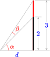
\(\displaystyle \alpha=\tan^{-1}\left(\dfrac{2}{d} \right)\)
\(\displaystyle \beta=\tan^{-1}\left(\dfrac{3}{d} \right)- \tan^{-1}\left(\dfrac{2}{d} \right)\)
Subsection Alternate Notations
The inverse sine function, \(\sin^{-1}x\text{,}\) is also called the arcsine function and denoted by arcsin \(x\). (This terminology reminds us that the output of the inverse sine function is an angle, or the arc on a unit circle determined by that angle, as shown below.)

Similarly, the inverse cosine function is sometimes denoted by arccos \(x\), and the inverse tangent function by arctan \(x\). Some computer programs use the notation asin \(x\), accos \(x\), and atan \(x\).
Example 8.38.
Simplify each expression.
- \(\displaystyle \cos\left(\arccos \dfrac{1}{3}\right)\)
- \(\displaystyle \arcsin\left(\sin \dfrac{3\pi}{2}\right)\)
- Keep in mind that \(\arccos \dfrac{1}{3}\) is an angle. We'll call it \(\theta\text{,}\) so that \(\theta = \arccos \dfrac{1}{3}\text{,}\) and hence \(\cos \theta = \dfrac{1}{3}\text{.}\) Then substituting \(\theta\) for \(\arccos \dfrac{1}{3}\) in the original expression gives us\begin{equation*} \cos\left(\arccos \dfrac{1}{3}\right) = \cos \theta = \dfrac{1}{3} \end{equation*}
- We start inside the parentheses: \(\sin \dfrac{3\pi}{2} = -1\text{.}\) So \(\arcsin\left(\sin \dfrac{3\pi}{2}\right) = \arcsin(-1)\text{.}\) Now \(\arcsin(-1)\) is the angle between \(\dfrac{-\pi}{2}\) and 0 whose sine is \(-1\text{,}\) and that angle is \(\dfrac{-\pi}{2}\text{.}\) Thus, \(\arcsin\left(\sin \dfrac{3\pi}{2}\right) = \dfrac{-\pi}{2}\)
Checkpoint 8.39.
Simplify each expression.
- \(\displaystyle \tan\left(\arctan \dfrac{-5}{2}\right)\)
- \(\displaystyle \arctan\left(\tan \dfrac{-5\pi}{6}\right)\)
\(\displaystyle \dfrac{-5}{2} \)
\(\displaystyle \dfrac{\pi}{6} \)
Subsection Simplifying Expressions
The key to simplifying expressions involving inverse trigonometric functions is to remember that the inverse sine, cosine, or tangent of a number can be treated as an angle. If we assign a name such as \(\theta\) or \(\phi\) to the inverse trig value, it can often clarify the computations.
Example 8.40.
Evaluate \(\sin\left(\cos^{-1} \dfrac{3}{5}\right)\text{.}\)
Let \(\theta\) represent the angle \(\cos^{-1} \dfrac{3}{5}\text{,}\) so that \(\theta = \cos^{-1} \dfrac{3}{5}\text{,}\) and consequently \(\cos \theta = \dfrac{3}{5}\text{.}\) Then \(\sin\left(\cos^{-1} \dfrac{3}{5}\right)\) simplifies to \(\sin \theta\text{,}\) and we know that \(\cos \theta = \dfrac{3}{5}\text{.}\) If we know one of the trigonometric ratios of an angle, we can find all the others, either by using a diagram or by using identities. In this case we'll use the Pythagorean identity, \(\sin^2 \theta + \cos^2 \theta = 1\text{.}\) We have
and solving for \(\sin \theta\) gives us \(\sin \theta = \dfrac{\pm 4}{5}\text{.}\) But \(\theta = \cos^{-1} \dfrac{3}{5}\) is a first quadrant angle, so its sine is positive. Thus, \(\sin\left(\cos^{-1} \dfrac{3}{5}\right) = \dfrac{4}{5}\text{.}\)
Checkpoint 8.41.
Evaluate \(\cos\left(\tan^{-1} \dfrac{2}{3}\right)\text{.}\)
\(\dfrac{3}{\sqrt{13}} \)
We can verify the results of the previous example using a calculator, but the same technique can be applied to simplify similar expressions involving variables.
Example 8.42.
Simplify \(\tan(\sin^{-1} x)\text{,}\) assuming that \(0 \le x \le 1\text{.}\)
Let \(\theta = \sin^{-1}x\text{,}\) so that \(\sin \theta = x\text{,}\) and the expression \(\tan(\sin^{-1} x) = \tan \theta\text{.}\) Now we use identities to write \(\tan \theta\) in terms of \(x\text{.}\) First, from the Pythagorean identity we know that \(\cos \theta = \sqrt{1-\sin^2\theta} = \sqrt{1-x^2}\text{,}\) and then
Checkpoint 8.43.
Simplify \(\sin(\tan^{-1} z)\text{,}\) assuming that \(z \ge 0\text{.}\)
\(\dfrac{z}{\sqrt{1+z^2}} \)
Subsection Algebra Refresher
Exercises Exercises
- Find a formula for the inverse function.
- State the domain and range of the inverse function.
- Graph the function and its inverse on the same grid.
1.
\(f(x) = \dfrac{1}{2}x-4\)
2.
\(g(x) = 3x+6\)
3.
\(F(x) = 2+\dfrac{1}{x}\)
4.
\(G(x) = \dfrac{1}{x+5}\)
5.
\(h(x) = \sqrt{x+2}\)
6.
\(H(x) = 3+\sqrt[3]{x}\)
Subsubsection Algebra Refresher Answers
- \(\displaystyle f^{-1}(x)=2x+8\)
- Dom: \((-\infty, \infty)\) Rge: \((-\infty, \infty)\)
- 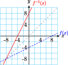
- \(\displaystyle g^{-1}(x)=\dfrac{1}{3}x-2\)
- Dom: \((-\infty, \infty)\) Rge: \((-\infty, \infty)\)
- 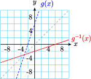
- \(\displaystyle F^{-1}(x)=\dfrac{1}{x-2}\)
- Dom: \(x \not=0\) Rge: \(y \not=2\)
- 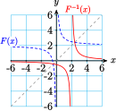
- \(\displaystyle G^{-1}(x)=\dfrac{1}{x}-5\)
- Dom: \(x \not=-5\) Rge: \(y \not=0\)
- 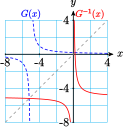
- \(\displaystyle h^{-1}(x)=x^2-2\)
- Dom: \(x \ge 0\) Rge: \(y \ge -2\)
- 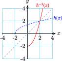
- \(\displaystyle H^{-1}(x)=(x-3)^3\)
- Dom: \((-\infty, \infty)\) Rge: \((-\infty, \infty)\)
- 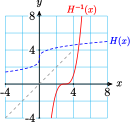
Subsection Section 8.2 Summary
Subsubsection Vocabulary
- Inverse function
- One-to-one
- Subtend
Subsubsection Concepts
- Using one of the calculator keys \(SIN^{-1},~ COS^{-1}\text{,}\) or \(TAN^{-1}\) performs the inverse operation for computing a sine, cosine or tangent.
- Two functions are called inverse functions if each "undoes" the results of the other function.
- If \(y=f(x)\) is a function, we can often find a formula for the inverse function by interchanging \(x\) and \(y\) in the formula for the function, and then solving for \(y\text{.}\)
- The graphs of \(y=f(x)\) and \(y=f^{-1}(x)\) are symmetric about the line \(y=x\text{.}\)
- The domain of \(f^{-1}\) is the same as the range of \(f\text{,}\) and the range of \(f^{-1}\) is the same as the domain of \(f\text{.}\)
Horizontal Line Test.
A function passes the Horizontal Line Test if every horizontal line intersects the graph at most once. In that case, there is only one \(x\)-value for each \(y\)-value, and the function is called one-to-one.
- A function \(f\) has an inverse function if and only if \(f\) is one-to-one.
Definitions of the inverse trig functions.
\begin{equation*} \sin^{-1}x=\theta~~~\text{if and only if}~~~~\sin \theta = x~~~\text{and}~~~\dfrac{-\pi}{2} \le \theta \le \dfrac{\pi}{2} \end{equation*}\begin{equation*} \cos^{-1}x=\theta~~~\text{if and only if}~~~~\cos \theta = x~~~\text{and}~~~0 \le \theta \le \pi \end{equation*}\begin{equation*} \tan^{-1}x=\theta~~~\text{if and only if}~~~~\tan \theta = x~~~\text{and}~~~\dfrac{-\pi}{2} \lt \theta \lt \dfrac{\pi}{2} \end{equation*}Inverse Trigonometric Functions.
\begin{equation*} \sin(\sin^{-1}x) = x~~~~\text{for}~ -1 \le x \le 1 \end{equation*}\begin{equation*} \cos(\cos^{-1}x) = x~~~~\text{for}~ -1 \le x \le 1 \end{equation*}\begin{equation*} \tan(\tan^{-1}x) = x~~~~\text{for all}~x \end{equation*}However,
\begin{equation*} \sin^{-1}(\sin x)~~\text{may not be equal to}~x \end{equation*}\begin{equation*} \cos^{-1}(\cos x)~~\text{may not be equal to}~x \end{equation*}\begin{equation*} \tan^{-1}(\tan x)~~\text{may not be equal to}~x \end{equation*}- The inverse sine function is also called the arcsine function and denoted by \(\arcsin (x)\text{.}\) Similarly, the inverse cosine function is sometimes denoted by \(\arccos (x)\text{,}\) and the inverse tangent function by \(\arctan (x)\text{.}\)
- When simplifying expressions involving inverse trigonometric functions, it can often clarify the computations if we assign a name such as \(\theta\) or \(\phi\) to the inverse trig value.
Subsubsection Study Questions
-
Here is a table of values defining a function \(f\text{.}\) Make a table of values for \(f^{-1}\text{.}\)
\(x\) \(-3\) \(-2\) \(0\) \(1\) \(4\) \(f(x)\) \(6\) \(3\) \(1\) \(0\) \(-1\) - What does it mean for a function to be one-to-one? Give an example.
- Why do we restrict the domains of the trig functions when we define their inverse functions?
-
Which of the following expressions is undefined? Why?
- \(\displaystyle \cos^{-1}(0)\)
- \(\displaystyle \arctan(-2)\)
- \(\displaystyle \arcsin(-2)\)
-
- Write \(x\) as a function of \(\theta\text{.}\)
- Write \(\theta\) as a function of \(x\text{.}\)
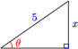 -
- Write \(x\) as a function of \(\theta\text{.}\)
- Write \(\theta\) as a function of \(x\text{.}\)
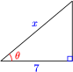
Subsubsection Skills
- Decide whether a function has an inverse function #1-8
- Evaluate the inverse trig functions #9-20
- Model problems with inverse trig functions #21-24
- Solve formulas #25-30
- Simplify expressions involving the inverse trig functions #31-42, 51-68
- Graph the inverse trig functions #43-50, 69 and 70
Exercises Homework 8-2
In Problems 1–4, which functions have an inverse function? Explain your answer.
1.
2.
3.
4.
For Problems 5–8, graph the function and decide if it has an inverse function.
5.
\(f(x)=\sin 2x - \cos x\)
6.
\(g(x)=4e^{-(x/4)^2}\)
7.
\(G(x)=\sqrt{25-x^2}\)
8.
\(F(x)=\ln(x^3+8)\)
For Problems 9–14, use a calculator to evaluate. Round your answers to the nearest tenth of a degree.
9.
\(\sin^{-1}(0.2838)\)
10.
\(\tan^{-1}(4.8972)\)
11.
\(\cos^{-1}(0.6894)\)
12.
\(\arccos(-0.8134)\)
13.
\(\arctan(-1.2765)\)
14.
\(\arcsin(-07493)\)
For Problems 15–20, give exact values in radians.
15.
\(\cos^{-1} \dfrac{-1}{\sqrt{2}}\)
16.
\(\tan^{-1}(-1)\)
17.
\(\sin^{-1}\dfrac{-1}{2}\)
18.
\(\arccos\dfrac{\sqrt{3}}{2}\)
19.
\(\arctan \dfrac{1}{\sqrt{3}}\)
20.
\(\arcsin (-1)\)
For Problems 21–26, sketch a figure to help you model each problem.
21.
Delbert is watching the launch of a satellite at Cape Canaveral. The viewing area is 500 yards from the launch site. The angle of elevation, \(\theta\text{,}\) of Delbert's line of sight increases as the booster rocket rises.
- Write a formula for the height, \(h\text{,}\) of the rocket as a function of \(\theta\text{.}\)
- Write a formula for \(\theta\) as a function of \(h\text{.}\)
- Evaluate the formula in part (b) for \(h=1000\text{,}\) and interpret the result.
22.
Francine's house lies under the flight path from the city airport, and commercial airliners pass overhead at an altitude of 15,000 feet. As Francine watches an airplane recede, its angle of elevation, \(\theta\text{,}\) decreases.
- Write a formula for the horizontal distance, \(d\text{,}\) to the airplane as a function of \(\theta\text{.}\)
- Write a formula for \(\theta\) as a function of\(d\text{.}\)
- Evaluate the formula in part (b) for \(d=20,000\text{,}\) and interpret the result.
23.
While driving along the interstate, you approach an enormous 50-foot-wide billboard that sits just beside the road. Your viewing angle, \(\theta\text{,}\) increases as you get closer to the billboard.
- Write a formula for your distance, \(d\text{,}\) from the billboard as a function of \(\theta\text{.}\)
- Write a formula for \(\theta\) as a function of \(d\text{.}\)
- Evaluate the formula in part (b) for \(d=200\text{,}\) and interpret the result.
24.
Emma is walking along the bank of a straight river toward a 20-meter long bridge over the river. Let \(\theta\) be the angle subtended horizontally by Emma's view of the bridge.
- Write a formula for Emma's distance from the bridge, \(d\text{,}\) as a function of \(\theta\text{.}\)
- Write a formula for \(\theta\) as a function of \(d\text{.}\)
- Evaluate the formula in part (b) for \(d=500\text{,}\) and interpret the result.
25.
Martin is viewing a 4-meter tall painting whose base is 1 meter above his eye level.
- Write a formula for \(\alpha\text{,}\) the angle subtended from Martin's eye level to the bottom of the painting, when he stands \(x\) meters from the wall.
- Write a formula for \(\beta\text{,}\) the angle subtended by the painting, in terms of \(x\text{.}\)
- Evaluate the formula in part (b) for \(x=5\text{,}\) and interpret the result.
26.
A 5-foot mirror is positioned so that its bottom is 1.5 feet below Jane's eye level.
- Write a formula for \(\alpha\text{,}\) the angle subtended by the section of mirror below Jane's eye level, when she stands \(x\) feet from the mirror.
- Write a formula for \(\theta\text{,}\) the angle subtended by the entire mirror, in terms of \(x\text{.}\)
- Evaluate the formula in part (b) for \(x=10\text{,}\) and interpret the result.
For Problems 27–32, solve the formula for the given variable.
27.
\(V=V_0 \sin(2\pi\omega t+\phi)\text{,}\) for \(t\)
28.
\(R=\dfrac{1}{32} v_0^2\sin (2\theta)\text{,}\) for \(\theta\)
29.
\(\dfrac{a}{\sin A}= \dfrac{b}{\sin B}\text{,}\) for \(A\)
30.
\(c^2=a^2 + b^2 - 2ab\cos C\text{,}\) for \(C\)
31.
\(P=\dfrac{k}{R^4\cos \theta}\) for \(\theta\)
32.
\(\dfrac{r}{z}=\dfrac{1}{\tan (\alpha + \beta)}\text{,}\) for \(\alpha\)
For Problems 33–38, find exact values without using a calculator.
33.
\(\tan\left(\sin^{-1}\left(\dfrac{2}{3}\right)\right)\)
34.
\(\tan\left(\cos^{-1}\left(\dfrac{3}{4}\right)\right)\)
35.
\(\cos\left[\tan^{-1}(-2)\right]\)
36.
\(\sin \left[\tan^{-1}\left(\dfrac{-3}{\sqrt{5}}\right)\right]\)
37.
\(\sin\left[\cos^{-1}\left(\dfrac{-2\sqrt{6}}{7}\right)\right]\)
38.
\(\cos\left[\sin^{-1}\left(\dfrac{-2}{7}\right)\right]\)
For Problems 39–44, simplify the expression.
39.
\(\tan(\cos^{-1}x)\)
40.
\(\cos(\tan^{-1}a)\)
41.
\(\cos(\sin^{-1}h)\)
42.
\(\sin(\cos^{-1}v)\)
43.
\(\sin(\tan^{-1}2t)\)
44.
\(\tan(\sin^{-1}3b)\)
For Problems 45–47, complete the table of values and sketch the function.
45.
| \(x\) | \(-1\) | \(\dfrac{-\sqrt{3}}{2}\) | \(\dfrac{-\sqrt{2}}{2}\) | \(\dfrac{-1}{2}\) | \(0\) | \(\dfrac{1}{2}\) | \(\dfrac{\sqrt{2}}{2}\) | \(\dfrac{\sqrt{3}}{2}\) | \(1\) |
| \(\cos^{-1}x\) | \(\hphantom{0000}\) | \(\hphantom{0000}\) | \(\hphantom{0000}\) | \(\hphantom{0000}\) | \(\hphantom{0000}\) | \(\hphantom{0000}\) | \(\hphantom{0000}\) | \(\hphantom{0000}\) | \(\hphantom{0000}\) |

46.
| \(x\) | \(-1\) | \(\dfrac{-\sqrt{3}}{2}\) | \(\dfrac{-\sqrt{2}}{2}\) | \(\dfrac{-1}{2}\) | \(0\) | \(\dfrac{1}{2}\) | \(\dfrac{\sqrt{2}}{2}\) | \(\dfrac{\sqrt{3}}{2}\) | \(1\) |
| \(\sin^{-1}x\) | \(\hphantom{0000}\) | \(\hphantom{0000}\) | \(\hphantom{0000}\) | \(\hphantom{0000}\) | \(\hphantom{0000}\) | \(\hphantom{0000}\) | \(\hphantom{0000}\) | \(\hphantom{0000}\) | \(\hphantom{0000}\) |
47.
| \(x\) | \(-\sqrt{3}\) | \(-1\) | \(\dfrac{-1}{\sqrt{3}}\) | \(0\) | \(\dfrac{1}{\sqrt{3}}\) | \(1\) | \(\sqrt{3}\) |
| \(\tan^{-1}x\) | \(\hphantom{0000}\) | \(\hphantom{0000}\) | \(\hphantom{0000}\) | \(\hphantom{0000}\) | \(\hphantom{0000}\) | \(\hphantom{0000}\) | \(\hphantom{0000}\) |
48.
Use a graphing calculator to answer each of the following questions. Then explain the results.
- Does \(\cos^{-1}x=\dfrac{1}{\cos x}\text{?}\)
- Does \(\sin^{-1}x=\dfrac{1}{\sin x}\text{?}\)
- Does \(\tan^{-1}x=\dfrac{1}{\tan x}\text{?}\)
49.
- Sketch a graph of \(y=\cos^{-1}x\text{,}\) and label the scales on the axes.
- Use transformations to sketch graphs of \(y=2\cos^{-1}x\) and \(y=\cos^{-1}(2x)\text{.}\)
- Does \(2\cos^{-1}x=\cos^{-1}(2x)\text{?}\)
50.
- Sketch a graph of \(y=\sin^{-1}x\text{,}\) and label the scales on the axes.
- Use transformations to sketch graphs of \(y=\dfrac{1}{2}\sin^{-1}x\) and \(y=\cos^{-1}(\dfrac{1}{2}x)\text{.}\)
- Does \(\dfrac{1}{2}\sin^{-1}x=\cos^{-1}(\dfrac{1}{2}x)\text{?}\)
51.
- Sketch a graph of \(y=\tan^{-1}x\text{,}\) and label the scales on the axes.
- Use your calculator to graph \(y=\dfrac{\sin^{-1}x}{\cos^{-1}x}\) on a suitable domain.
- Does \(\tan^{-1}x=\dfrac{\sin^{-1}x}{\cos^{-1}x}\text{?}\)
52.
- Use your calculator to sketch \(y=\sqrt[3]{x}\) and \(\tan^{-1}x\) on \([-10, 10]\text{.}\)
- Describe the similarities and differences in the two graphs.
Use the identities from Section 8.1 to help you find exact values for the expressions in Problems 53–58.
53.
\(\sin (2\tan^{-1}4)\)
54.
\(\cos\left(2\sin^{-1}\left(\dfrac{5}{13}\right)\right)\)
55.
\(\tan\left(2\cos^{-1}\left(\dfrac{3}{4}\right)\right)\)
56.
\(\sin\left(2\cos^{-1}\left((\dfrac{-4}{5}\right)\right)\)
57.
\(\tan\left(2\sin^{-1}\left(\dfrac{1}{3}\right)\right)\)
58.
\(\cos\left(2\tan^{-1}\left(\dfrac{3}{2}\right)\right)\)
59.
Let \(\alpha= \cos^{-1}\left(\dfrac{-4}{5}\right),~\beta=\sin^{-1}\left(\dfrac{5}{13}\right)\text{.}\) Find exact values for the following.
- \(\displaystyle \cos (\alpha+\beta)\)
- \(\displaystyle \sin (\alpha+\beta)\)
- \(\displaystyle \cos (\alpha-\beta)\)
- \(\displaystyle \sin (\alpha-\beta)\)
60.
Let \(\alpha= \sin^{-1}\left(\dfrac{-15}{17}\right),~\beta=\tan^{-1}\left(\dfrac{4}{3}\right)\text{.}\) Find exact values for the following.
- \(\displaystyle \cos (\alpha+\beta)\)
- \(\displaystyle \sin (\alpha+\beta)\)
- \(\displaystyle \cos (\alpha-\beta)\)
- \(\displaystyle \sin (\alpha-\beta)\)
61.
Find an exact value for \(\sin\left(\tan^{-1}\left(\dfrac{3}{4}\right)-\sin^{-1}\left(\dfrac{-4}{5}\right)\right)\text{.}\)
62.
Find an exact value for \(\cos\left(\tan^{-1}\left(\dfrac{5}{12}\right)+\sin^{-1}\left(\dfrac{-3}{5}\right)\right)\text{.}\)
63.
Express in terms of \(x\) without trigonometric functions.
- \(\displaystyle \sin(2\tan^{-1}x)\)
- \(\displaystyle \cos(2\sin^{-1}x)\)
64.
Express in terms of \(w\) without trigonometric functions.
- \(\displaystyle \sin(2\cos^{-1}w)\)
- \(\displaystyle \cos(2\tan^{-1}w)\)
65.
If \(x=5\sin \theta,~0\degree \lt \theta \lt 90\degree\text{,}\) express \(\sin 2\theta\) and \(\cos 2\theta\) in terms of \(x\text{.}\)
66.
If \(x-1=2\cos \theta,~0\degree \lt \theta \lt 90\degree\text{,}\) express \(\sin 2\theta\) and \(\cos 2\theta\) in terms of \(x\text{.}\)
67.
If \(x=3\tan \theta\text{,}\) write \(\theta +\dfrac{1}{4}\sin 2\theta\) in terms of \(x\text{.}\)
68.
If \(x=5\cos \theta\text{,}\) write \(\dfrac{\theta}{2}-\cos 2\theta\) in terms of \(x\text{.}\)
69.
- For what values of \(x\) is the function \(f(x)=\sin (\arcsin x)\) defined?
- Is \(\sin (\arcsin x)=x\) for all \(x\) where it is defined? If not, for what values of \(x\) is the equation false?
- For what values of \(x\) is the function \(g(x)=\arcsin(\sin x)\) defined?
- Is \(\arcsin (\sin x)=x\) for all \(x\) where it is defined? If not, for what values of \(x\) is the equation false?
70.
- For what values of \(x\) is the function \(f(x)=\cos (\arccos x)\) defined?
- Is \(\cos (\arccos x)=x\) for all \(x\) where it is defined? If not, for what values of \(x\) is the equation false?
- For what values of \(x\) is the function \(g(x)=\arccos(\cos x)\) defined?
- Is \(\arccos (\cos x)=x\) for all \(x\) where it is defined? If not, for what values of \(x\) is the equation false?
71.
Use your calculator to graph \(y=\sin^{-1}x+\cos^{-1}x\text{.}\)
- State the domain and range of the graph.
- Explain why the graph looks as it does.
72.
Use your calculator to graph \(y=\tan^{-1}x+\tan^{-1}(\dfrac{1}{x})\text{.}\)
- State the domain and range of the graph.
- Explain why the graph looks as it does.
In Problems 73–74, we find a formula for the area under part of a semicircle.
73.
Use the figure of a unit circle to answer the following.
- Write an expression for the area of the shaded sector in terms of \(\theta\text{.}\)
- How are \(\theta\) and \(t\) related in the figure? (Hint: Write an expression for \(\sin \theta\text{.}\))
- Combine your answers to (a) and (b) to write an expression for the area of the sector in terms of \(t\text{.}\)
74.
Use the figure of a unit circle to answer the following.
- Write an expression for the height of the shaded triangle in terms of \(t\text{.}\) (Hint: Use the Pythagorean theorem.)
- Write an expression for the area of the triangle in terms of \(t\text{.}\)
- Combine your answers to (b) and to Problem 73 to write an expression for the area bounded above by the upper semicircle, below by the \(x\)-axis, on the left by the \(y\)-axis, and on the right by \(x=t\text{,}\) when \(0 \le t \le 1\text{.}\)